|
点评诺基亚Nokia
N82手机
|
优点： |
1，五百万像素，Zeiss镜头，图片质量好，达到一千元级傻瓜数码相机水平；
2，光圈快门不可调但诸多参数可调，如ISO，白平衡，锐化度，对比度，曝光补偿；
3，摄像功能强大，每秒30P拍摄640x480解像度的有声录像，MPEG4存储。
4，有GPS卫星定位，收音机，WiFi无线上网，耳机插孔是标准的3.5mm; |
|
缺点： |
1，整体操作慢（启动慢，连拍慢，对焦慢，快门手感模糊）；
2，橙色辅助对焦灯不可关闭，造成偷拍困难；
3，不是手写屏；作为一款售价近4000元的高端手机来说制造工艺差，四维方向健太松，而且键盘输入困难；
4，电池不经用（智能手机的通病）； |
对街头纪实图片来说，关键不在你相机有多好，而在于你手上有没有相机。图片质量之类统统不重要，重要在于你拍到没有。Yes or No和Good or
Better有本质区别。最近我又一次深刻的体会到这句话的千真万确。
2007年12月中我在长沙马王堆陶瓷建材市场买水龙头，寒风凛凛中突然看到三个农民搬运工在打乒乓球，他们的球台是架在破烂三轮车上的一块五合板，中间放了三块
破砖头当球网。简陋的球台旁他们的欢声笑语四处飞扬，快乐得非常夸张。这种简单的快乐实在让人羡慕，我极想把这场景拍下来，平时我大多数时间都带着小数码相机，偏偏那天没带。我后悔得一塌糊涂，恨不得扇自己一耳光。
回到家我立刻上网查资料，看哪种手机拍照效果最好。出门手机是必带的。最后我确定买Nokia的N82。终于在宝南街手机市场一个小店买到了，人民币3760元，香港行货，一电一充，送2G的Micro
SD存储卡。
N82是一台功能强大的智能手机，我主要说说该机的照相功能。就拍照效果来看N82很好很强大，图片质量基本达到了市面上千元以下的低端数码相机水平。特别值得表扬的是白平衡（色温）非常准确，在复杂光源下甚至比某些数码单反还准。图片颜色非常准确，饱和度控制很好，不像某些小数码相机那样图片颜色过于饱和而显得俗不可耐。
N82的主摄像头里有一个5百万像素的感光芯片，镜头是蔡司天塞定焦头（Carl Zeiss Tessar），自动对焦但不能变焦，最大光圈F2.8，焦距5.6毫米。由于不知道感光芯片的尺寸，所以不知道这个5.6mm焦距相当于35mm相机多少毫米。我估计大约是40mm，接近标准镜头的视角。N82能够对ISO、白平衡、对比度、锐化度、曝光补偿进行调整，但光圈和快门速度都无法手动调整，所以N82只能算入门级的傻瓜数码相机。
值得一提的是N82的闪光灯不是偷工减料的LED灯，而是标准的电子闪光灯，闪光拍摄的肤色很准确。闪光灯里面还有一个辅助对焦灯，弱光时就发出一束橙色的光来帮助自动对焦。
这个辅助对焦灯是全自动的，无法关闭，夜晚时橙色光非常醒目，这使得N82在夜晚偷拍基本上不可能。
顺便说说N82的摄像功能，这方面N82虽然比N93i稍差，但作为手机摄像，其效果已经非常好了，除了不能变焦和无法立体声录音，N82摄像质量已经基本接近入门级DV的水平，能够以每秒30p的速度拍摄640x480解像度的有声录像。录像是以高度压缩的MPEG4格式存储的，这点非常难得。很多顶级的小数码相机都做不到这点，还在使用文件巨大的AVI存储格式，1G的卡拍不了几分钟录像。
除了拍照录像，作为一款智能手机N82的其他功能也非常强大，最让我喜欢的有三点：GPS，MP3，WiFi。N82内置GPS全球卫星定位系统，我安装了一个GPScam的小软件，能够记录每张图片的拍摄点经纬度。以前经常有人问我这照片是在哪拍的，我以后再也不发愁回答此类问题了。
N82具有WiFi无线上网功能，在无线接入点越来越多的今天，这个功能实在爽。但如果你需要WiFi的话你就只能购买水货N82，在中国大陆销售的行货N82是没有WiFi功能的，因为中国政府不允许有WiFi功能的手机在国内销售。我至今不明白这是为什么，中国的怪事实在太多。
MP3功能现在三百元的手机都有，但很少有手机和N82一样具有通用的3.5mm耳机插孔，这意味着不用麻烦的转接就能使用别的耳机，这太爽了，因为随机附送的Nokia原装耳机音质一般，比我常用的森海塞耳PX200差远了。不清楚N82里面是什么音频解码芯片，我仔细对比了一下，觉得N82接近我常用的台电Telecast
T29 MP3的音质。所以我的MP3从此就退休了。
一个多月使用N82之后，我现在只要可能出门还是会带上原来的数码相机，这主要是因为N82拍照反应太迟钝，街头抓拍非常困难，它只适合拍摄静态的画面。打开N82的镜头盖后需要大约2.5秒才能开始拍摄，如果用500万像素最大解像度，每拍一张后大约要等1到1.5秒才能拍下一张，这比几百元的小数码相机都差远了，有时候等得我两眼发直。最让我恼火的是N82快门手感非常差，半按快门和全按快门的过度很模糊。弱光下N82对焦也很慢，很多时候我急着抓拍，快速按下快门但相机却半天才有反应，不少好镜头就这么错过了。
拍照之外如果要说N82最大的缺点，那就是售价近4千人民币的N82居然不是触摸屏，无法手写输入。对于大手大脚而又短信很多的男士，N82米粒一般的键盘确实让人痛苦，需要几天后才能慢慢适应。
另外N82是个电老虎，每天打三四个电话发20个短信听一个小时MP3的话，一块电池还坚持不到48小时，所以备用电池是必须的。
N82就是这样一个让人又爱又恨的拍照手机，图片质量很好但速度慢吞吞；功能强大但按键让人痛苦。不过，一个能打电话的家伙同时又能拍照录像，还有GPS，WiFi和MP3等一堆功能，要求每个功能都完美显然不现实。人无完人，机无完机，这就是生活。
以下是用N82拍摄的照片，大多数没有任何后期处理，只改变了图片大小。
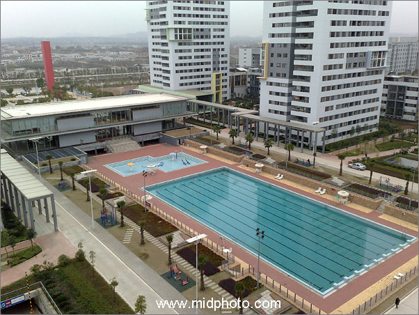
长沙阳光100居民小区，2007年12月30日。
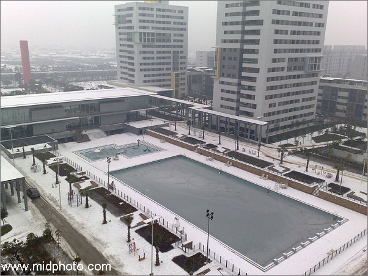
长沙阳光100居民小区，冰封的游泳池。2008年1月31日。
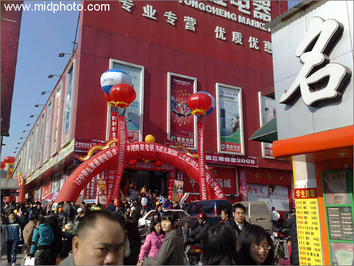
长沙，2008年1月1日。
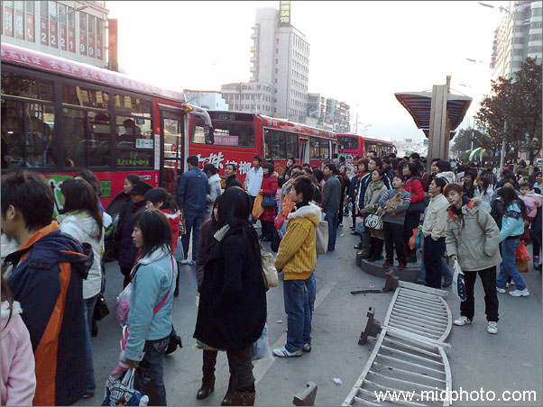
长沙，2008年1月1日。五一广场混乱的乘车秩序。
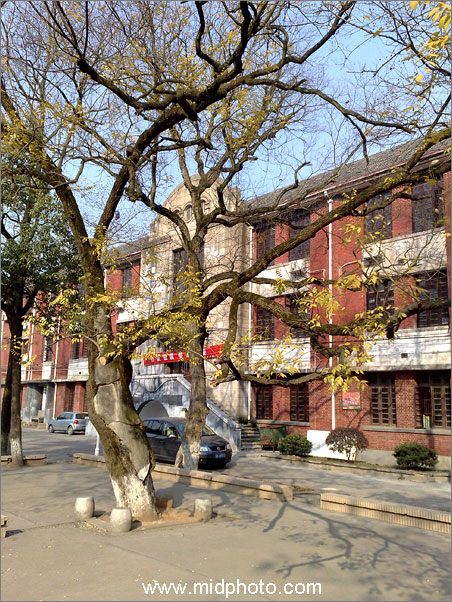
湖南大学，冬天的阳光。2008年1月3日。
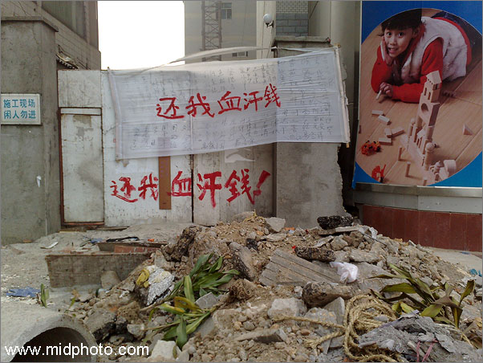
签名版血汗钱。长沙马王堆一建筑工地门口，2008年1月10日。
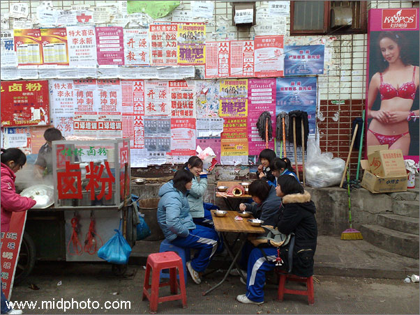
湖南大学堕落街。2008年1月。
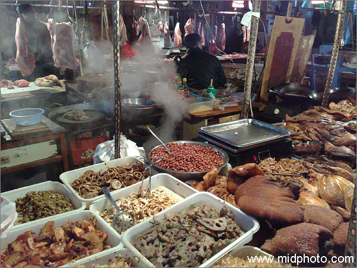
湖南大学菜市场卤味。2008年1月。
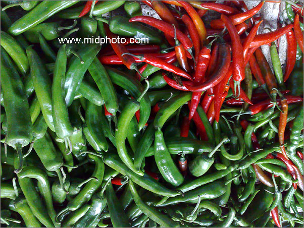
湖南大学菜市场的辣椒。2008年1月。
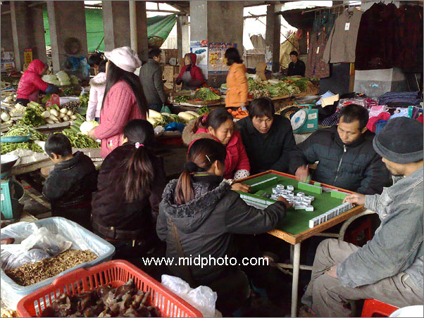
湖南大学菜市场。2008年1月。
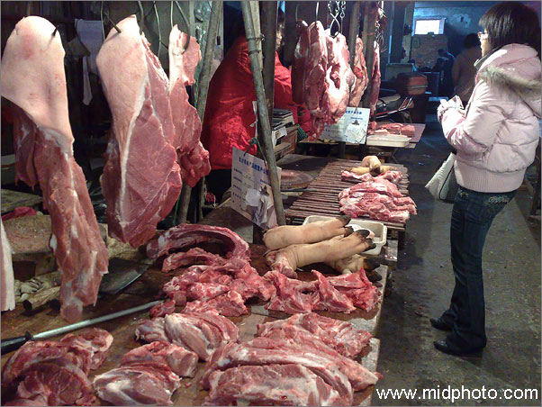
湖南大学菜市场猪肉摊。2008年1月。
照明光源是一个红色塑料桶罩着的白炽灯，N82没有上红色塑料桶的当，表现了很好的白平衡水平，猪肉的颜色非常准确。
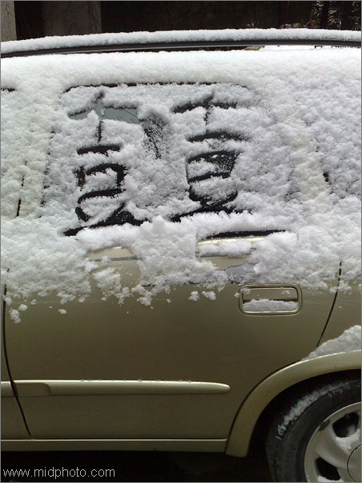
双喜。湖南大学雪天的汽车。2008年1月。
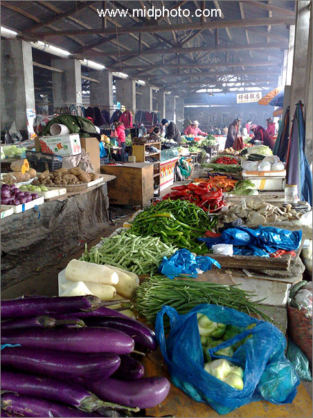
湖南大学菜市场。2008年1月。
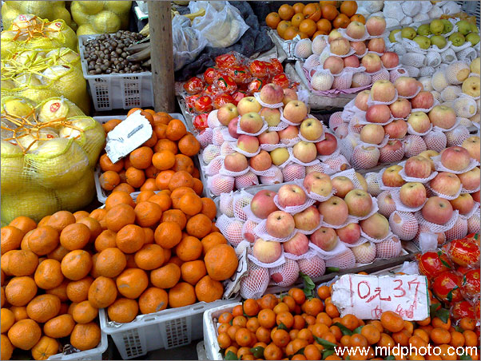
湖南大学菜市场的水果摊。2008年1月。
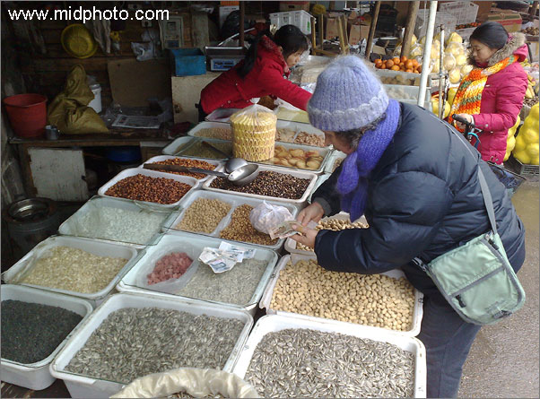
湖南大学菜市场炒货。2008年1月。我妈妈在付款。
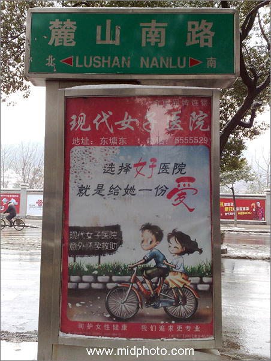
湖南大学麓山南路广告：意外怀孕了就去现代女子医院流产。2008年1月。送女朋友去做人工流产才不是给她一份爱，那是摧残她。正确的做法应该是时刻注意避孕。
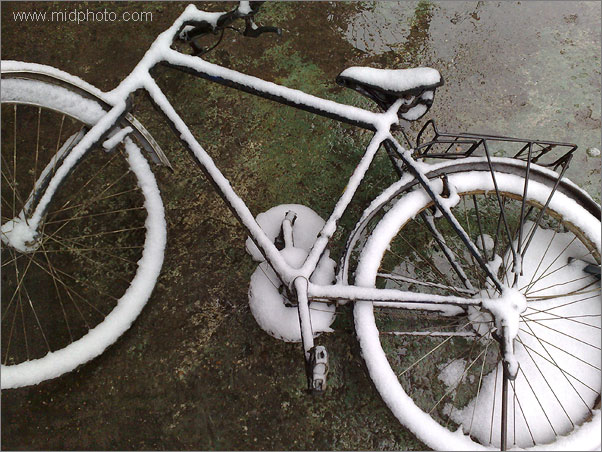
下雪了。长沙，2008年1月。
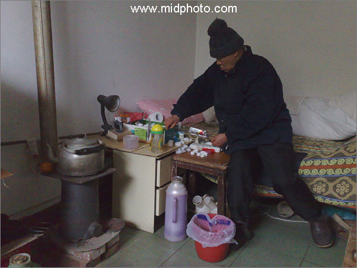
我的父亲。2008年1月。
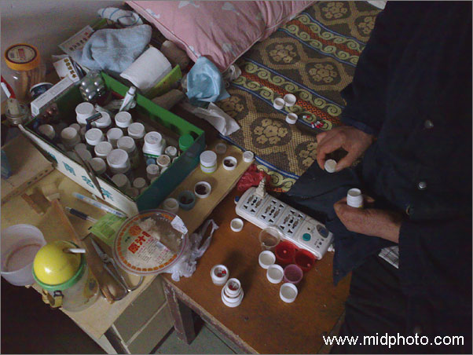
我的父亲，终日与几十个药瓶子为伴。2008年1月。
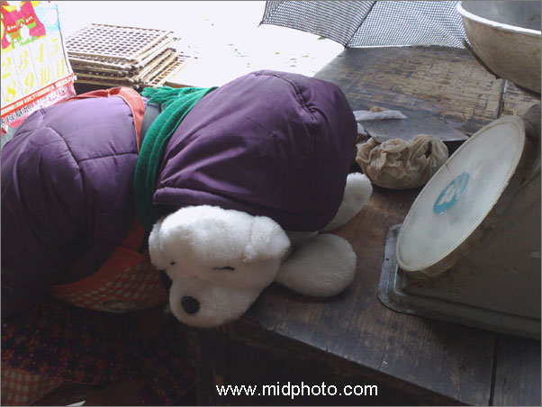
湖南大学菜市场小贩在休息。2008年1月。
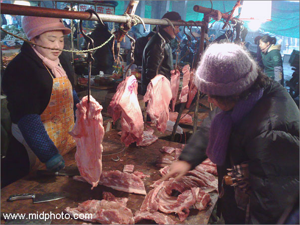
湖南大学菜市场。2008年1月。
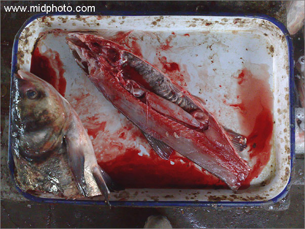
湖南大学菜市场的鱼。2008年1月。
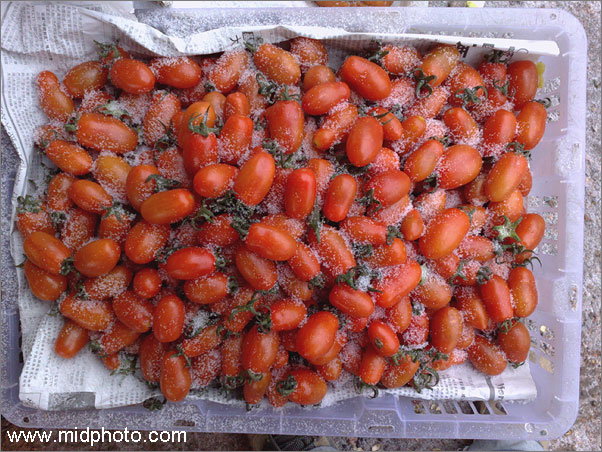
雪天西红柿。2008年1月。
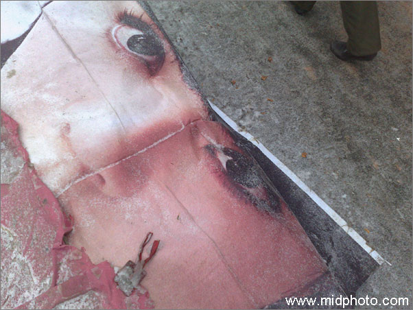
湖南大学菜市场的眼睛。2008年1月。
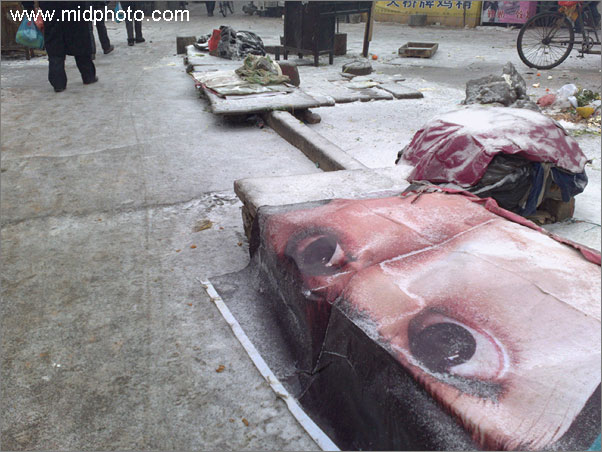
湖南大学菜市场的眼睛。2008年1月。
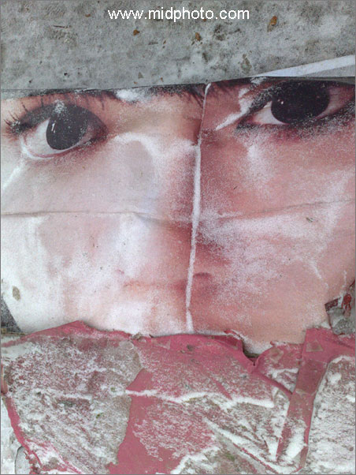
湖南大学菜市场的眼睛。2008年1月。
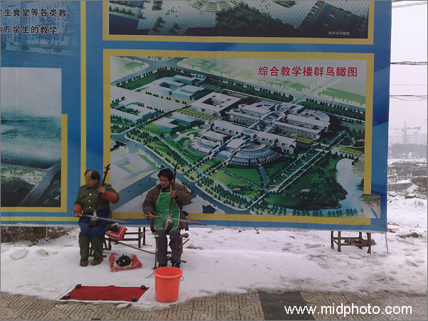
雪天卖艺。中南大学，2008年1月。
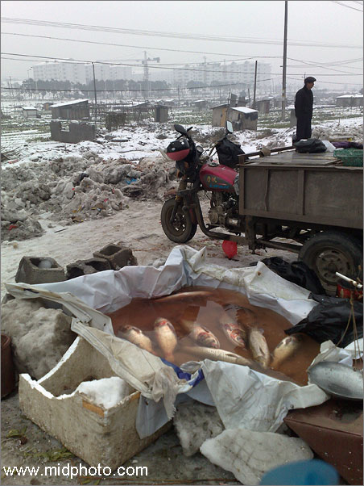
雪天卖鱼。中南大学菜市场，2008年1月
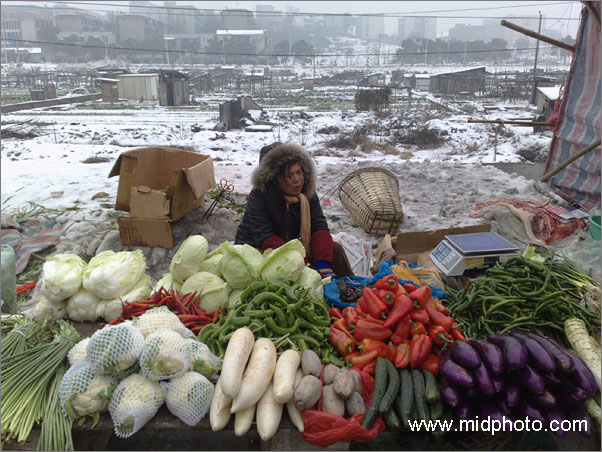
雪天卖菜。中南大学菜市场，2008年1月
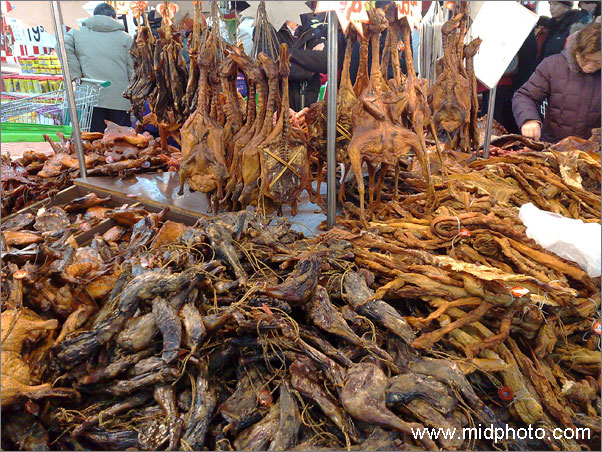
新一佳超市腊味。2008年1月。
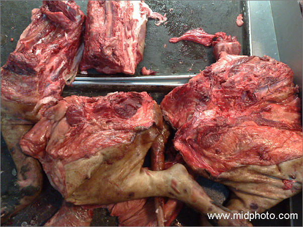
新一佳超市羊肉。2008年1月。
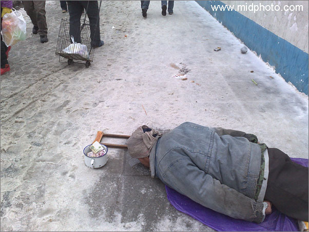
雪天乞丐。长沙荣湾镇。2008年1月。
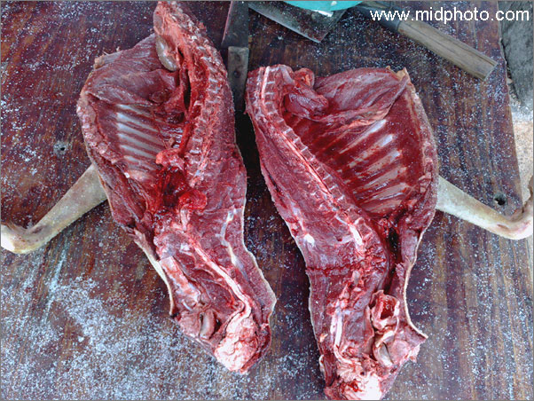
湖南大学菜市场狗肉。2008年1月。
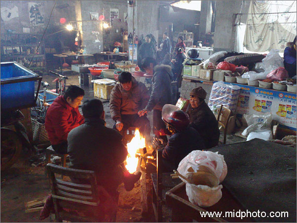
湖南大学菜市场。2008年1月。
相关阅读：理光GX100快速评论（9张图片，2007年8月2日）
|